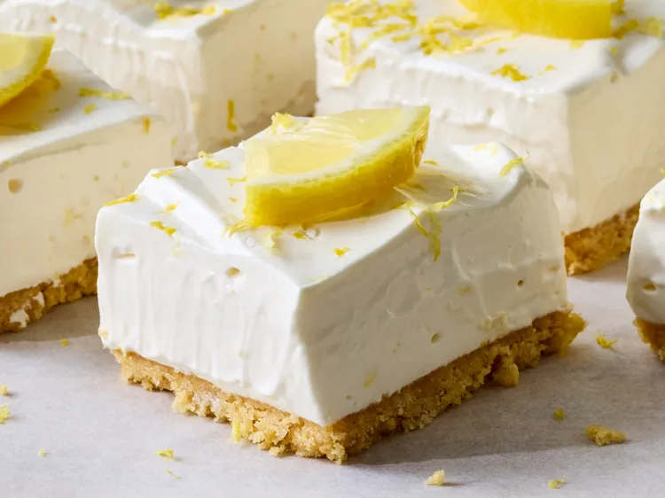

Home
No-Bake Lemon Bars

Description
These no-bake lemon bars need a few hours to chill, but are quick to assemble. A fluffy texture, buttery shortbread crust, and intense lemon flavor make them irresistible.
Prep Time: 15 mins |
Cook Time: 4 hrs |
Total Time: 4 hrs 15 mins |
Servings: 16
Ingredients
- 1 1/2 cups shortbread crumbs
- 1/4 cup unsalted butter, melted
- 2 tablespoons white sugar
- 1/2 teaspoon salt, divided
- 1 (14 ounce) can sweetened condensed milk
- 2 tablespoons lemon zest, plus more for garnish
- 1/2 cup lemon juice
- 1 1/2 cups heavy cream or 1 (8-ounce) carton frozen whipped dessert topping, thawed
Steps
- Line bottom and sides of an 8x8-inch baking pan with parchment paper, leaving a 2-inch overhang on opposite sides; set aside.
- Stir together shortbread crumbs, melted butter, sugar, and 1/4 teaspoon salt in a bowl until evenly moistened. Press mixture firmly into the bottom of the prepared pan.
- Whisk together sweetened condensed milk, lemon zest, lemon juice, and remaining 1/4 teaspoon salt in a large bowl until smooth.
- Beat heavy cream in a separate large bowl until stiff peaks form. Gently fold whipped cream or whipped dessert topping into the lemon mixture until fully combined.
- Spread filling evenly over the crust. Cover and refrigerate until firm, at least 4 hours.
- Lift chilled dessert from the pan using parchment overhang. Cut into 16 bars and garnish with additional lemon zest, if desired.
Recipe developed by Nicole Irwin
Nutrition Facts
126 Calories | 19g Fat | 34g Carbs | 4g Protein